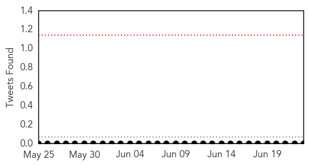
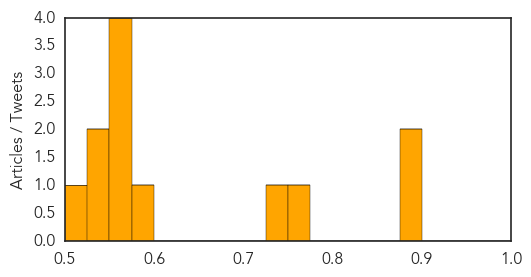
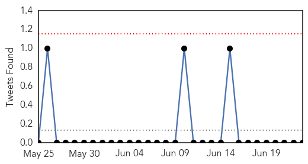
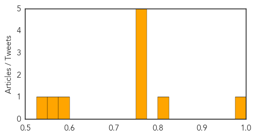

Meningitis
30-Day Web Trend
3 alerts, 0 warnings

30-Day Twitter Trend
0 alerts, 0 warnings

Article Locations

Article Confidences
Top Articles:
- 0.898
- Meningitis survivor urges wider use of lifesaving vaccine
- 0.879
- Meninigitis Survivor Urges Wider Use Of Lifesaving Vaccine
- 0.759
- Meningitis B vaccine on the way for England/Scotland
- 0.730
- New meningitis jab for babies
- 0.592
- Amazing Benefits of Drinking Water on Empty Stomach in the Early Morning
- 0.572
- GSK sells two meningitis vaccines to Pfizer for $130 mn
- 0.572
- GSK sells two meningitis vaccines to Pfizer for $130 mn
- 0.572
- GSK sells two meningitis vaccines to Pfizer for $130 mn
- 0.553
- adults can get meningitis too, says Wearside survivor
- 0.545
- Mother of Kalamazoo College student killed by meningitis to testify to CDC
- 0.542
- Pfizer to acquire two meningitis vaccines from GSK for 130 mn
- 0.520
- to Urge CDC Panel to Recommend Meningitis Vaccines
Top Tweets:
-
No tweets found for Jun 23, 2015
Influenza
30-Day Web Trend
0 alerts, 0 warnings

30-Day Twitter Trend
1 alerts, 0 warnings

Article Locations

Article Confidences
Top Articles:
- 0.984
- Media urged to create awareness on bird flu outbreak
- 0.825
- State precautions against avian flu take birds out of Lebanon Area Fair
- 0.751
- June 22, 2015 Archives
- 0.751
- June 22, 2015 Archives
- 0.751
- June 22, 2015 Archives
- 0.751
- June 22, 2015 Archives
- 0.751
- June 22, 2015 Archives
- 0.596
- Local Farmers Take Precautions Against Avian Flu
- 0.558
- After showing how ORS can treat diarrhoea, he now embarks on surveillance of pneumonia
- 0.536
- Willmar lab playing role as poultry industry looks for answers to avian flu
Top Tweets:
-
No tweets found for Jun 23, 2015